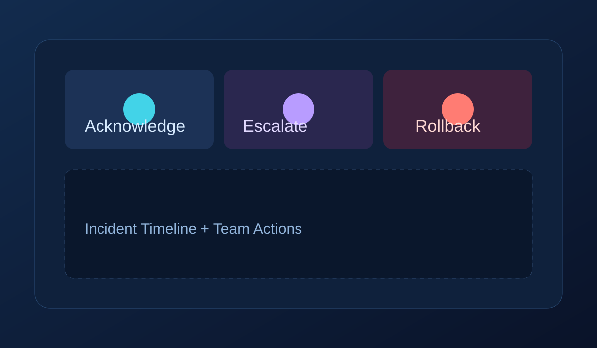

Scenario
Checkout outage during peak traffic
Act like an on-call responder. Every action emits telemetry-like events, changing system risk and team load.

Control Deck
Choose actions. Each button has tradeoffs.
Why this matters
- Acknowledge: reduces panic but does not fix root cause.
- Assign: improves ownership clarity and MTTR.
- Rollback: high-impact, usually lowers error rate quickly.
- Mute: lowers alert fatigue but increases blind-spot risk.